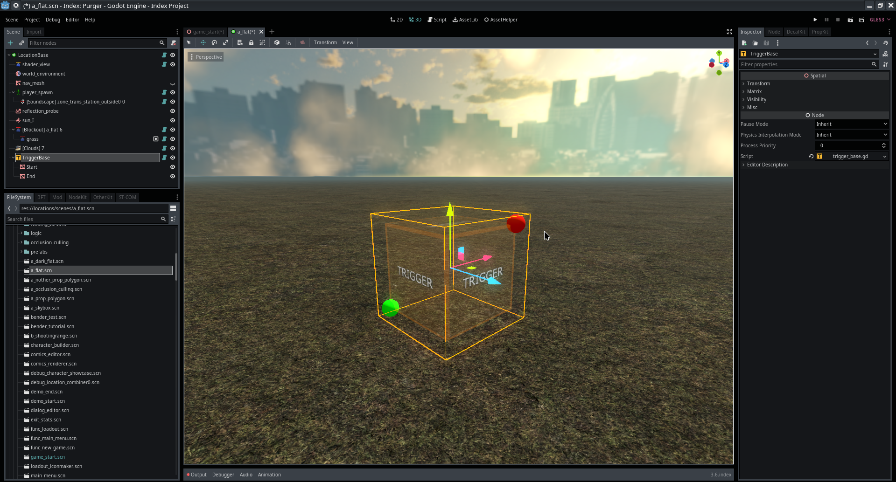

Module: trigger_base
Documentation last edited: October 23, 2025 at 14:33 UTC
Description

Это типа крутая база для триггеров, понимаешь, поэтому она и называется "trigger_base". Кубы. Ты просто... настраиваешь их. Они покрывают пространство. Они дают тебе возможность настраивать триггеры. Контроль. Легче программировать. Выглядит круче. Это была одна из первых вещей, сделанных в этом проекте. Выглядело чертовски круто. Оказалось, однако, едва полезным. Но чёрт, как же это было круто.
TriggerBase
— это типа приличный базовый класс для внутри-редакторных триггеров, который упрощает визуальную инициализацию и просто предоставляет базовые методы для проверки входа/выхода тел. Это... действительно всё.
Пример использования
tool
class_name KickassTrigger
extends TriggerBase
# Твой личный счётчик тел :)
var bodies =
[]
# Гарантирует, что триггеру назначен правильный материал
func verify_material():
if trigger_material == null:
trigger_material = \
load("res://modules/damagable/materials/damage_trigger_material.tres")
# Вызывается, когда тело входит в область триггера
func trigger_on_body_enter(body):
if body is StaticBody:
return # Игнорируем статические тела
if body is KinematicBody:
# Кинематические тела (обычно персонажи) добавляются в список отслеживания
bodies.append(body)
if body is RigidBody:
# Твёрдые тела тоже добавляются (могут быть физическими объектами)
bodies.append(body)
# Вызывается, когда тело покидает область триггера
func trigger_on_body_exit(body):
if body is StaticBody:
return # Игнорируем статические тела
bodies.erase(body) # Удаляем из списка отслеживания
Слушай, я знаю, ты это не читаешь. Никто не читает документацию. Но если ты это читаешь, поздравляю - теперь ты по закону обязан использовать этот класс правильно. Не уверен, зачем он тебе, но ты можешь гордиться этим.
General Information
Root directories list
docs, icons, materials, src
Nodes
Classes
None
Resources
None
Other Scripts
None